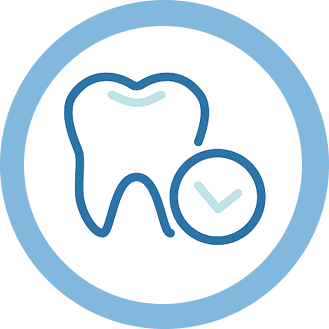
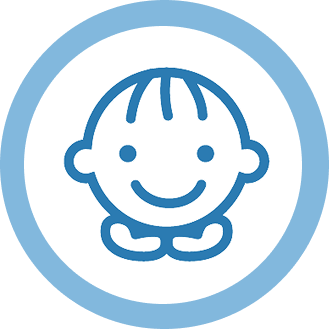
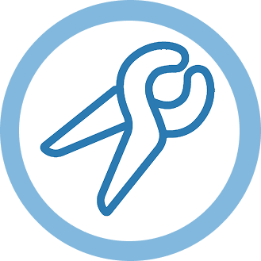
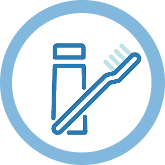

診療科目
一般歯科

むし歯や歯周病の治療を行い、患者さんの健康な歯を守るための基本的なケア を提供します。
痛みを抑えた治療を心がけ、できるだけ歯を残す治療 を大切にしています。
- むし歯の治療・詰め物・かぶせ物
- 歯周病の治療・歯石除去
- 経の治療（根管治療）
小児歯科

お子さまの歯の健康を守るために、むし歯の予防と治療を中心に、楽しく通える歯医者 を目指しています。
初めての歯医者さんでも安心できるよう、やさしく丁寧な対応を心がけています。
- 乳歯のむし歯治療
- シーラント（むし歯予防処置）
- フッ素塗布・歯磨き指導
口腔外科

親知らずの抜歯や顎関節症など、お口の中の外科的な治療を専門的に行います。
痛みや負担の少ない治療を心がけ、患者さん一人ひとりに合わせた適切な治療 を提供します。
- 親知らずの抜歯
- 顎関節症の治療 口内炎・粘膜疾患の診療
予防歯科

「痛くなってから行く」のではなく、むし歯や歯周病を防ぐことを目的とした診療です。
定期的な検診とクリーニングで、お口の健康を長く保ちましょう。
- 定期検診・クリーニング（PMTC）
- フッ素塗布で歯を強くする
- 歯周病の予防と早期発見